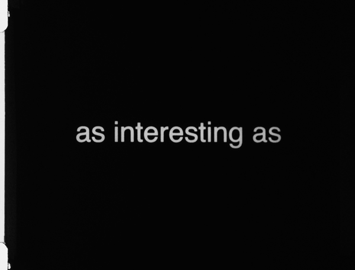

2017
Film action / Cinéma performé
16mm film (14 mins., black and white, silent, Spain/UK), variable costumes (fancy dress), electric toothbrush
A textual film that addresses directly and playfully the projected image, the relationship between the film and the audience, and the defining features of the space of projection. The film is complemented by a number of live actions performed by the audience and the projectionists. Evenly Balanced, Almost is a site-specific work for the dark theatre in the age of its imminent disappearance.
Video documentation of exhibition at Close-Up Cinema: https://vimeo.com/236582399
“Spanish artist Esperanza Collado’s film didn’t so much break through the fourth wall as demolish it. Out of the four pieces presented*, hers perhaps was riskier than any other. A minimal film that played with the idea of cinema’s primary roots as a medium for words and images, where the success of the work was entirely subject to the participation of the audience. There was in this respect a thread of Flux art running through the artist’s gamble. As with Yoko Ono’s Cut Piece, it was down to the audience to choose to pick up the scissors or in this case, rather more playfully turn to look behind or choose to scream. It was a refreshing, witty and intelligent piece of work.”
— Tom Matchett, FAD Magazine.
*As part of Unconscious Archives Festival curated by Sally Golding at Close-Up Cinema, London.